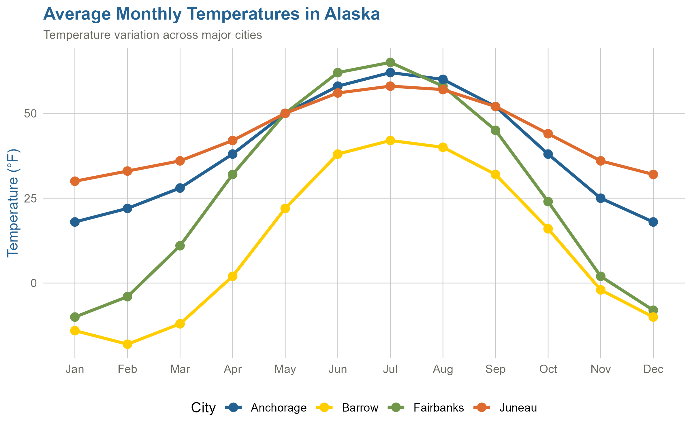
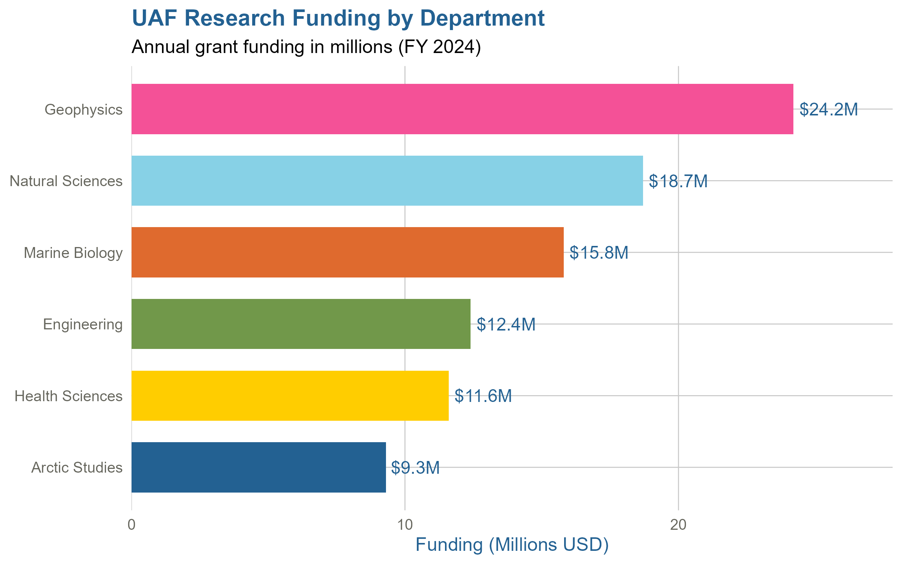
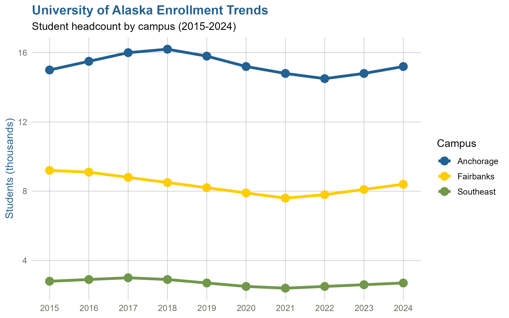
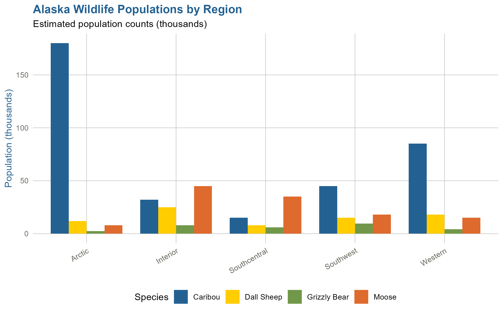
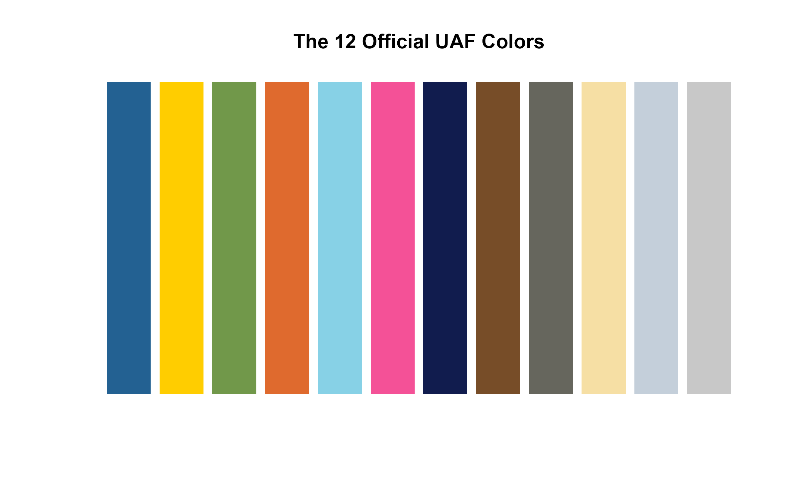

Installation
# install.packages("devtools")
devtools::install_github("rdazadda/UAF-color-scheme")Get Colors
# All 12 UAF colors
uafcolors()## [1] "#236192" "#FFCD00" "#71984A" "#DF6A2E" "#87D1E6" "#F45197" "#111C4E"
## [8] "#774D28" "#66665D" "#F6DFA4" "#C4CFDA" "#C8C8C8"
# Single color by name
uafcolors("blue")## [1] "#236192"
uafcolors("gold")## [1] "#FFCD00"Alaska Temperature Trends
# Alaska monthly temperature data
months <- c('Jan','Feb','Mar','Apr','May','Jun','Jul','Aug','Sep','Oct','Nov','Dec')
alaska_temps <- data.frame(
Month = factor(rep(months, 4), levels = months),
City = rep(c('Fairbanks', 'Anchorage', 'Juneau', 'Barrow'), each = 12),
Temperature = c(
-10, -4, 11, 32, 50, 62, 65, 58, 45, 24, 2, -8,
18, 22, 28, 38, 50, 58, 62, 60, 52, 38, 25, 18,
30, 33, 36, 42, 50, 56, 58, 57, 52, 44, 36, 32,
-14, -18, -12, 2, 22, 38, 42, 40, 32, 16, -2, -10
)
)
ggplot(alaska_temps, aes(x = Month, y = Temperature, color = City, group = City)) +
geom_line(linewidth = 1.2) +
geom_point(size = 3) +
scale_color_uaf() +
theme_uaf(base_size = 12) +
labs(
title = "Average Monthly Temperatures in Alaska",
subtitle = "Temperature variation across major cities",
y = "Temperature (°F)", x = NULL
) +
theme(legend.position = "bottom",
plot.subtitle = element_text(color = "#66665D", size = 10))
UAF Research Funding
research <- data.frame(
Department = c('Engineering', 'Natural Sciences', 'Geophysics',
'Marine Biology', 'Arctic Studies', 'Health Sciences'),
Funding = c(12.4, 18.7, 24.2, 15.8, 9.3, 11.6)
)
research$Department <- factor(research$Department,
levels = research$Department[order(research$Funding)])
ggplot(research, aes(x = Department, y = Funding, fill = Department)) +
geom_col(width = 0.7, show.legend = FALSE) +
geom_text(aes(label = paste0("$", Funding, "M")),
hjust = -0.1, size = 4, color = "#236192") +
scale_fill_uaf() +
theme_uaf(base_size = 12) +
coord_flip() +
labs(
title = "UAF Research Funding by Department",
subtitle = "Annual grant funding in millions (FY 2024)",
x = NULL, y = "Funding (Millions USD)"
) +
scale_y_continuous(expand = expansion(mult = c(0, 0.15)))
University Enrollment Trends
enrollment <- data.frame(
Year = rep(2015:2024, 3),
Campus = rep(c('Fairbanks', 'Anchorage', 'Southeast'), each = 10),
Students = c(
9200, 9100, 8800, 8500, 8200, 7900, 7600, 7800, 8100, 8400,
15000, 15500, 16000, 16200, 15800, 15200, 14800, 14500, 14800, 15200,
2800, 2900, 3000, 2900, 2700, 2500, 2400, 2500, 2600, 2700
)
)
ggplot(enrollment, aes(x = Year, y = Students/1000, color = Campus)) +
geom_line(linewidth = 1.5) +
geom_point(size = 4) +
scale_color_uaf() +
theme_uaf(base_size = 12) +
labs(
title = "University of Alaska Enrollment Trends",
subtitle = "Student headcount by campus (2015-2024)",
x = NULL, y = "Students (thousands)"
) +
scale_x_continuous(breaks = 2015:2024)
Alaska Wildlife Populations
wildlife <- data.frame(
Species = rep(c('Moose', 'Caribou', 'Grizzly Bear', 'Dall Sheep'), each = 5),
Region = rep(c('Interior', 'Arctic', 'Southcentral', 'Southwest', 'Western'), 4),
Population = c(
45, 8, 35, 18, 15,
32, 180, 15, 45, 85,
8, 2.5, 6, 9.5, 4.2,
25, 12, 8, 15, 18
)
)
ggplot(wildlife, aes(x = Region, y = Population, fill = Species)) +
geom_col(position = "dodge", width = 0.8) +
scale_fill_uaf() +
theme_uaf(base_size = 11) +
labs(
title = "Alaska Wildlife Populations by Region",
subtitle = "Estimated population counts (thousands)",
x = NULL, y = "Population (thousands)"
) +
theme(legend.position = "bottom",
axis.text.x = element_text(angle = 30, hjust = 1))
Base R Graphics
# Display all 12 UAF colors
barplot(rep(1, 12), col = uafcolors(), border = NA,
main = "The 12 Official UAF Colors", yaxt = "n")
Color Reference
| Color | Hex | Code |
|---|---|---|
| Blue | #236192 | uafcolors("blue") |
| Gold | #FFCD00 | uafcolors("gold") |
| Green | #71984A | uafcolors("green") |
| Orange | #DF6A2E | uafcolors("orange") |
| Cyan | #87D1E6 | uafcolors("cyan") |
| Magenta | #F45197 | uafcolors("magenta") |
| Dark Blue | #111C4E | uafcolors("dark blue") |
| Brown | #774D28 | uafcolors("brown") |
| Dark Grey | #66665D | uafcolors("dark grey") |
| Custard | #F6DFA4 | uafcolors("custard") |
| Light Blue | #C4CFDA | uafcolors("light blue") |
| Light Grey | #C8C8C8 | uafcolors("light grey") |